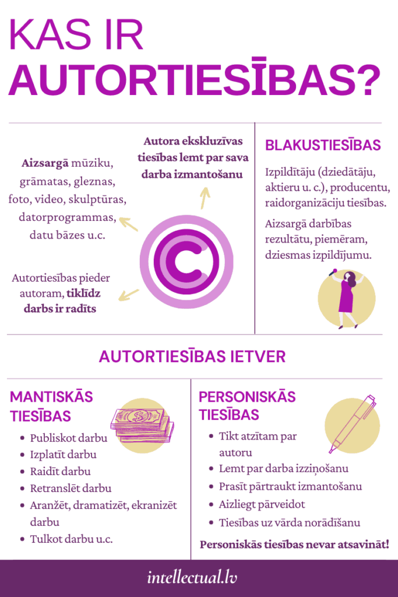

Autortiesību aizsardzība
1.Autortiesību definīcija
- Aizsargā autora tiesības uz viņa radīto darbu, novēršot nelegālu izmantošanu.
- Ietver tiesības uz darbu reproducēšanu, izplatīšanu, un publisku izpildīšanu.
2. Aizsardzības objekti
- Autortiesības attiecas uz darbiem, kas ir oriģināli un radīti radošas darbības rezultātā.
- Ietver literāros darbus, vizuālo mākslu, mūziku, kinofilmas, datoru programmas un daudz ko citu.
3. Autortiesību iegūšana
- Autortiesības iegūst automātiski, kad autors rada darbu, neatkarīgi no reģistrācijas.
- Darbs tiek aizsargāts no pirmā radīšanas brīža līdz tā legalizēšanai.
4. Autora tiesības
- Autors var piešķirt tiesības izmantot savu darbu citiem, piemēram, licencējot to.
- Autors var pieprasīt atlīdzību par darbu izmantošanu un aizsargāt savu darbu no pārkāpumiem.
5. Aizsardzības ilgums
- arasti aizsardzība ilgst autora dzīvi plus 70 gadi, bet var atšķirties atkarībā no valsts likumiem.
- Pēc aizsardzības perioda beigām darbs kļūst par sabiedrības īpašumu, kas nozīmē, ka ikviens var to izmantot.
